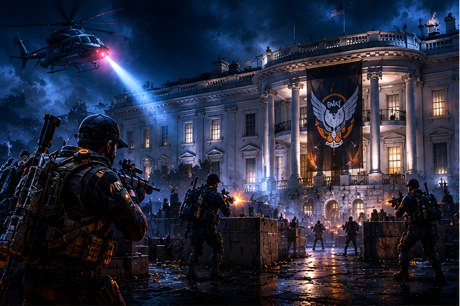

Raid / Washington D.C.
Operation Dark Hours
Primeira raid de The Division 2, focada em coordenação de grupo, dano consistente e encontros com mecânicas bem definidas. É fortemente associada ao farm da Eagle Bearer.
Raid
Grupo
Eagle Bearer
Endgame
Abrir guia Dark Hours